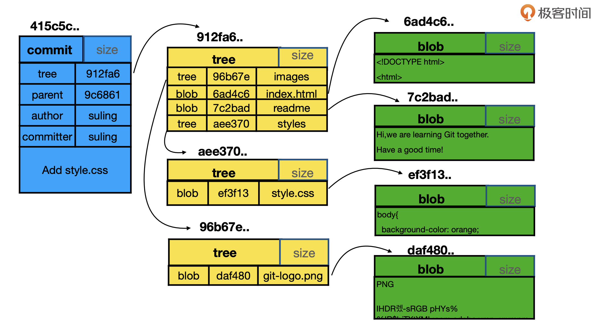

-
.git文件目录 - commit,tree,block关系
- 分离头指针情况的注意事项（没有与branch进行关联）
- 修改commit的message
- rebase操作
- diff操作
- 恢复工作区，恢复索引区
- 删除，重命名文件
- ignore文件
.git文件目录
➜ .git git:(V.12.0) ls -l
total 1440
-rw-r--r-- 1 raojunbo staff 26 12 15 15:40 COMMIT_EDITMSG
-rw-r--r-- 1 raojunbo staff 1573 12 18 19:12 FETCH_HEAD
-rw-r--r-- 1 raojunbo staff 23 12 18 19:12 HEAD
-rw-r--r-- 1 raojunbo staff 41 12 18 19:12 ORIG_HEAD
-rw-r--r-- 1 raojunbo staff 551 12 12 12:56 config
-rw-r--r-- 1 raojunbo staff 73 11 30 11:39 description
-rw-r--r-- 1 raojunbo staff 311844 12 20 22:54 gitk.cache
drwxr-xr-x 13 raojunbo staff 416 11 30 11:39 hooks
-rw-r--r-- 1 raojunbo staff 391258 12 20 22:48 index
drwxr-xr-x 3 raojunbo staff 96 11 30 11:39 info
drwxr-xr-x 4 raojunbo staff 128 11 30 11:42 logs
drwxr-xr-x 256 raojunbo staff 8192 12 14 14:58 objects
-rw-r--r-- 1 raojunbo staff 1536 11 30 11:42 packed-refs
drwxr-xr-x 5 raojunbo staff 160 11 30 11:42 refs
HEAD 文件
存有当前分支的头指针。在切换分支的时候，会跟随分支的变化而变化。当然也可以不与分支挂钩，直接指向一个处理分支状态（任意指向的）也可以。config 文件
git config -l命令的内容
ORIG_HEAD 文件
FETCH_HEAD 文件
object目录
对象集，block ,commit,tree,tags;refs
git内部的命令
查看hash所代表的对象类型 `git cat-file -t 005642f3c41eecb8c56b8b77c4f100f1575ccf54查看hash所代表的对象实际内容
git cat-file -p 005642f3c41eecb8c56b8b77c4f100f1575ccf54
commit,tree,block关系

blob实际就是真实的文件
tree实际就是目录
commit是git里的东西是一个包含“根tree”的东西。commit里有parent(父commit),author(作者),committer(提交者)
分离头指针情况的注意事项（没有与branch进行关联）
➜ GitTestDir git:(master) git checkout 552aa3eba30936d5c4ecf148b38d0cbc89221fbc
Note: checking out '552aa3eba30936d5c4ecf148b38d0cbc89221fbc'.
You are in 'detached HEAD' state. You can look around, make experimental
changes and commit them, and you can discard any commits you make in this
state without impacting any branches by performing another checkout.
If you want to create a new branch to retain commits you create, you may
do so (now or later) by using -b with the checkout command again. Example:
git checkout -b <new-branch-name>
HEAD is now at 552aa3e add sty
➜ GitTestDir git:(552aa3e)
直接切换到一个指定的commit号，直接进入工作后，进行提交，如果在checkout 到其它分支，就会出现分离头指针，也就是没有基于某个分支。在后期，分支的指针会自动被清理掉。
git diff HEAD HEAD^ //head与父亲进行对比
git diff HEAD HEAD^ //head 与父亲的父亲进行对比
git diff HEAD HEAD~1 //head 与父亲进行对比
修改commit的message
对最近一次的message做修改
git commit --amend
rebase操作
修改以往的任何一个commit的message(rebase)
示例
commit3
commit2
commit1
我现在要，修改commit2,那么我就是git rebase -i commit1;以commit1作为基准,去修改其后面的commit信息。
rebase 命令的交互命令里有拿出commit,重新设置messge等操作。
修改后commit的commit号会发生变化。
合并以往的连续的几个commit（rebase）
示例
commit4
commit3
commit2
commit1
合并commit2,与commit3为commit5;这样就会形成一个新的commit;
合并以往的不连续的commit(rebase)
其实与前面一样，只是，列出commit ，然后描述命令
diff操作
比较工作区，索引区,HEAD的差异
git diff --cached比较索引区域HEAD的差别比较
git diff工作区与索引区的差别比较不同分支的同一个文件的差异
git diff temp master -- filename
temp是一个分支或者commitid，master是一个分支或者commitid；
恢复工作区，恢复索引区
- 清空工作区
git checkout file
git checkout .
- 将加入索引的放入工作区
git reset HEAD
- 清除最近的几个commit
git reset --hard commitid
删除，重命名文件
- 重命名文件
git mv filename1 filename2
- 删除文件
git rm filename
ignore文件
.gitignore告诉哪些不需要加入git的管理里